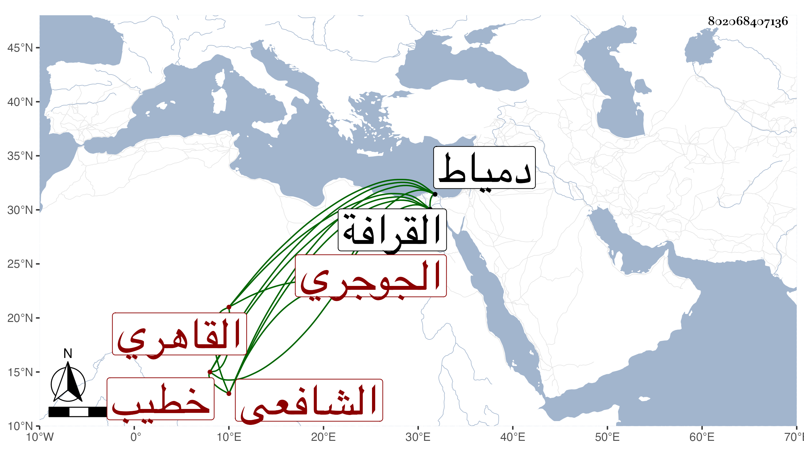

0902Sakhawi.DawLamic.ITO20230111-ara1.EIS1600.802068407136
Biography ID: 802068407136
739
علي بن داود بن سليمان بن خلد بن عوض بن عبد الله بن محمد نور الدين الجوجري ثم القاهري الشافعي خطيب جامع طولون. ممن حضر عند الجلال المحلي وأخذ الفقه عن المناوي وكان للشيخ فيه حسن الإعتقاد والفرائض عن الشهابين الأبشيطي والشارمساحي والعقليات والتصوف عن الشرواني وكان يصفه بالصوفي في آخرين وقرأ على الديمي الترمذي وتميز في فنون وأشير إليه بالفضيلة سيما في العربية والفرائض والتصوف وأخذ عن الفضلاء كالنور الأشموني قاضي دمياط وابن الأسيوطي ثم جحده وكان أخذ عنه عبد القادر بن مغيزل وهو المفيد لترجمته وكتب على ألفية ابن مالك والمطرزية وغيرهما وحج وجاور وأقرأ هناك أيضا وخطب بالجامع الطولوني وقتا ثم استقر به الأشرف قايتباي بسفارة تغرى بردى القادري في خطابة مدرسته التي أنشأها بالكبش وإمامتها وكان مع فضيلته صالحا متعبدا متقللا قانعا متوددا ساعيا مع من يقصده ذكر بمحاسن والغالب عليه التصوف. مات عن ثلاث وستين سنة بمقتضى ما بلغني في ليلة جمعة من أواخر سنة سبع وثمانين وصلى عليه بعد الجامع بالجامع الطولوني ثم دفن بالقرافة عند أبي العباس البصير رحمه الله واستقر بعده في الخطابة محمد بن يحيى الطيبي وفي الإمامة الفرياني .
